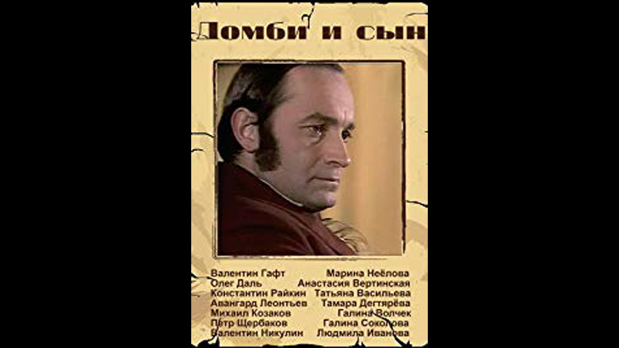

| Character | Actor |
|---|---|
| Mr. Dombey | Valentin Gaft |
| Florence Dombey | Marina Neyolova |
| Captain Cuttle | Pyotr Shcherbakov |
| Mr. Toots | Avangard Leontev |
| Susan Nipper | Tamara Degtyareva |
| Edith Dombey | Anastasiya Vertinskaya |
| James Carker | Oleg Dal |
| Walter Gay | Konstantin Raykin |
| Young Walter | Seryozha Reznitskiy |
| Major Bagstock | Aleksandr Vokach |
| Solomon Gills | Mikhail Kozakov |
| Louisa Chick | Galina Sokolova |
| Lucretia Tox | Tatyana Vasileva (as T. Itsykovich) |
| Mrs. Pipchin | Lyudmila Ivanova |
| Rob Toodle | Fyodor Valikov |
| The Hon. Mrs. Skewton | Galina Volchek |
| Polly Toodle | Natalya Katasheva |
| Paul Dombey | Yevgeni Mitta |
| Young Florence | Yelena Rzhadova |
| Dr. Blimber | Valentin Nikulin |
| Cornelia Blimber | Yelena Millioti |
| Fanny Dombey | Mikaela Drozdovskaya |
| Mr. Brogley | Vsevolod Davydov |
| Johnny | Denis Evstigneev |
| Robin | Konstantin Kravinsky |
| Narrator (voice) | Oleg Tabakov |
| Role | Person |
|---|---|
| Director | Valeri Fokin / Galina Volchek |
| Cinematography | Yuri Isakov |